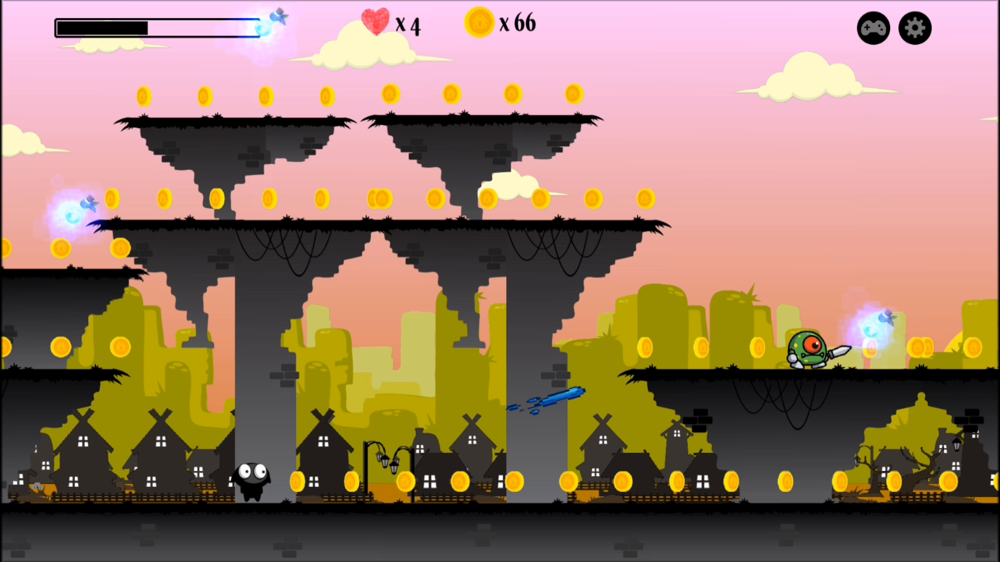
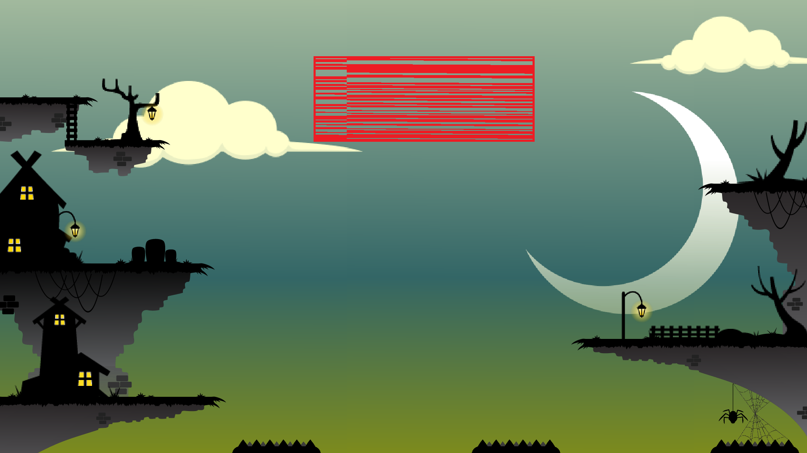
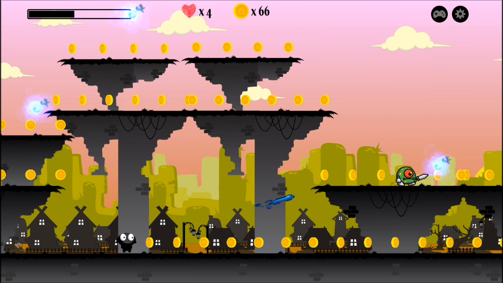
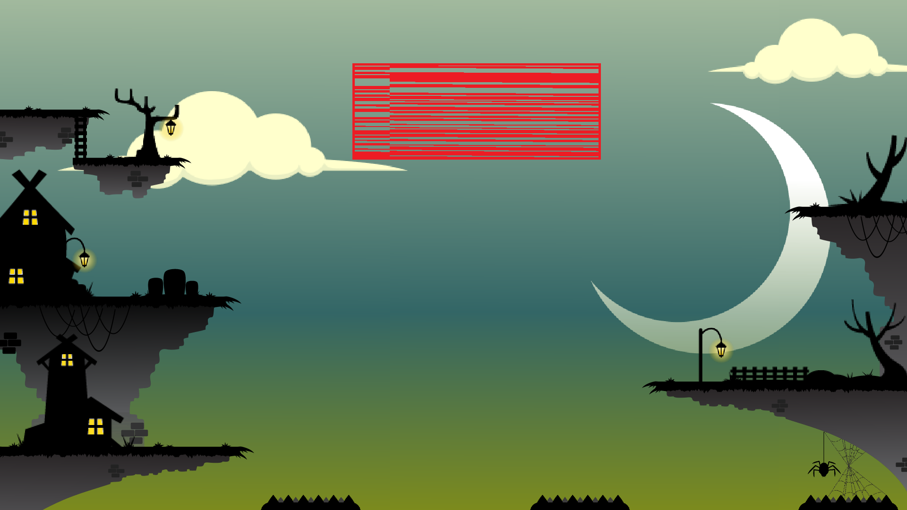

Description
OwlRunner est un jeu vidéo mobile axé sur un gameplay rapide et fluide dans lequel le personnage principal court automatiquement à travers un environnement généré dynamiquement. L’objectif principal est de survivre le plus longtemps possible en évitant les obstacles et en collectant des objets bonus. Certains types d’objets permettront également au joueur d’accroitre temporairement ses performances afin d’obtenir le meilleur score possible.
Spitch
Le joueur incarne un personnage principal qui se déplace automatiquement de plus en plus vite à travers les différents niveaux. Le degré de difficulté augmente progressivement à mesure que le joueur progresse. Le but étant, d’aller le plus loin possible et ainsi terminer chaque niveau. Pour y arriver, le joueur devra collecter des fioles d’air pour se maintenir en vie tout en tuant le maximum de MOB et en évitant les différents obstacles. Il pourra également tout au long du parcours, collecter le maximum de pièces afin de réaliser le meilleur score possible. Pour l’aider, le personnage pourra collecter des power-ups qui permettront d’améliorer ses performances sur un temps donné ou acheter des améliorations afin de faciliter sa progression. Lorsque le joueur termine un niveau, il débloque le niveau suivant.
Comment jouer
Texte Texte Texte Texte Texte Texte Texte Texte Texte Texte Texte Texte Texte Texte Texte Texte Texte Texte Texte Texte Texte Texte Texte Texte Texte Texte Texte Texte Texte Texte Texte Texte Texte Texte Texte Texte Texte Texte Texte Texte Texte Texte Texte Texte Texte Texte Texte Texte Texte Texte Texte Texte Texte Texte Texte Texte Texte Texte Texte Texte Texte Texte Texte Texte Texte Texte Texte Texte Texte Texte Texte Texte Texte Texte Texte Texte Texte Texte Texte Texte Texte Texte Texte Texte Texte Texte Texte Texte
Politique de confidentialité de Owl Runner Conditions générales d'utilisation (CGU) de Owl Runner